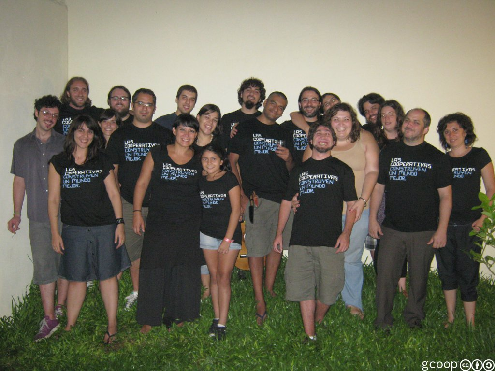

las cooperativas construyen un mundo mejor
ABSOLUTELLY NO WARRANTY | CC-BY-SA | OSiUX | .git

Hoy La cooperativa de Software Libre gcoop cumple 5 años y estoy feliz, porque en estos pocos años, mi vida cambió por completo y en todo sentido, no sólo en lo laboral ya que el espíritu del cooperativismo, se extiende a nuestras familias, amigos, colegas y clientes, a todo el entorno que nos rodea logramos sacarle una sonrisa, cumplir con los objetivos y superarnos día a día.
Hemos crecido y hoy somos 12 socios que no sólo coincidimos en usar y difundir el Software Libre, además compartimos ideales, lucha y militancia en un gran número de proyectos sociales, algunos con mayores repercusiones que otros, pero que finalmente influyen mucho en cada persona que participa, colabora o disfruta de ellos y es ahí en las personas donde hacemos foco, son las que importan y prevalecen a cualquier tecnología.
En el 2007 cuando me acerqué a gcoop, fue con la convicción de que sólo quiero trabajar con software libre y nunca más con software privativo a esto mi lista de habilidades técnicas se resumió en no se mucho, pero aprendo rápido. Y así fue como empecé a aprender un comando tras otro, diferentes protocolos y lenguajes, entender cada aplicación necesaria, eso fue lo fácil, aunque algunos bugs tardara un año en resolverlos. ;-)
Lo más difícil en cualquier organización es lograr trabajar en equipo para sacar adelante un proyecto afrontando todos los desafíos que propone, generalmente lo técnico se resuelve de una u otra manera, lo importante es poder mantener el equilibro en las relaciones humanas que son las que realmente importan, dejando de lado las diferencias individuales y sumar entre todos para construir un futuro, que hoy es un presente increíble donde participamos de la toma de decisiones de todos y cada uno de los aspectos de la vida de nuestra cooperativa, desde elegir un framework para un trabajo como también si compramos una parrilla para la coop o nos vamos todos juntos un fin de semana largo a laburar con familia incluída a un hotel cooperativo en pipinas. :-)
Hace rato que venimos coordinando y colaborando para la formación de otras cooperativas de software, contamos nuestra experiencia con aciertos y errores a todo aquel que se acerque y tenga ganas de levantar desde cero una cooperativa que es la manera de construir un mundo mejor, aceptando la responsabilidad de los compromisos asumidos, siendo solidario, respetando y valorando a los demás.
Un abrazo fuerte a todos los gcooperos, a quienes admiro! Y espero les haya gustado el asadito de anoche!